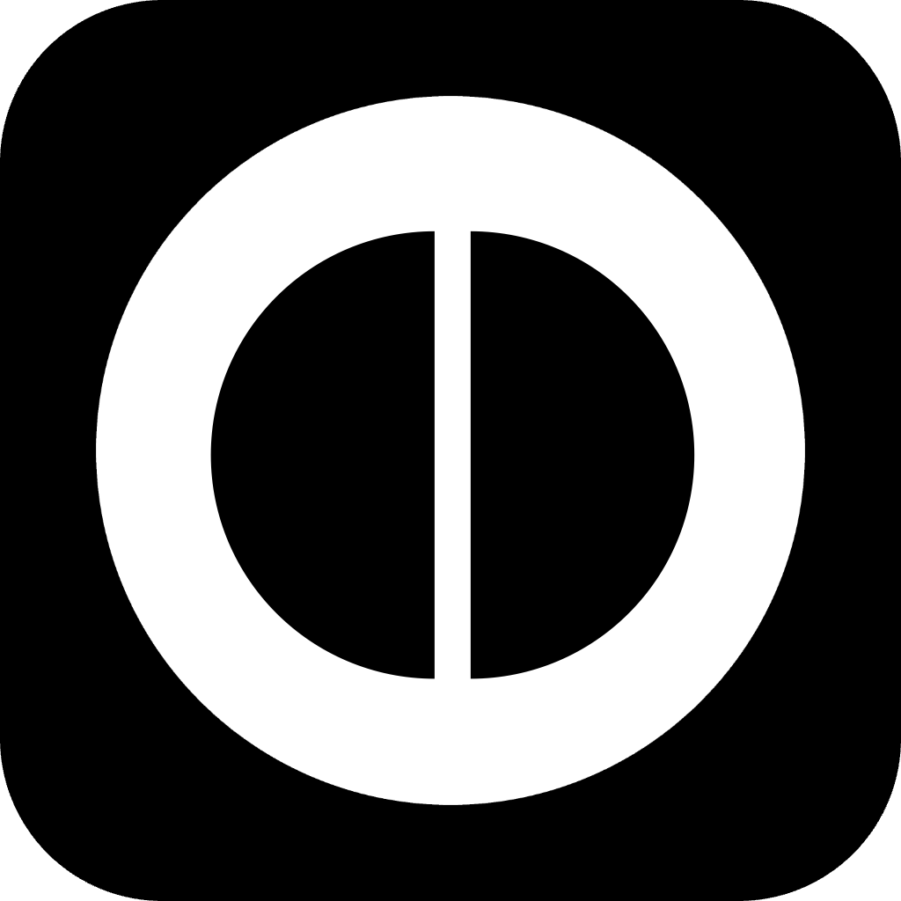
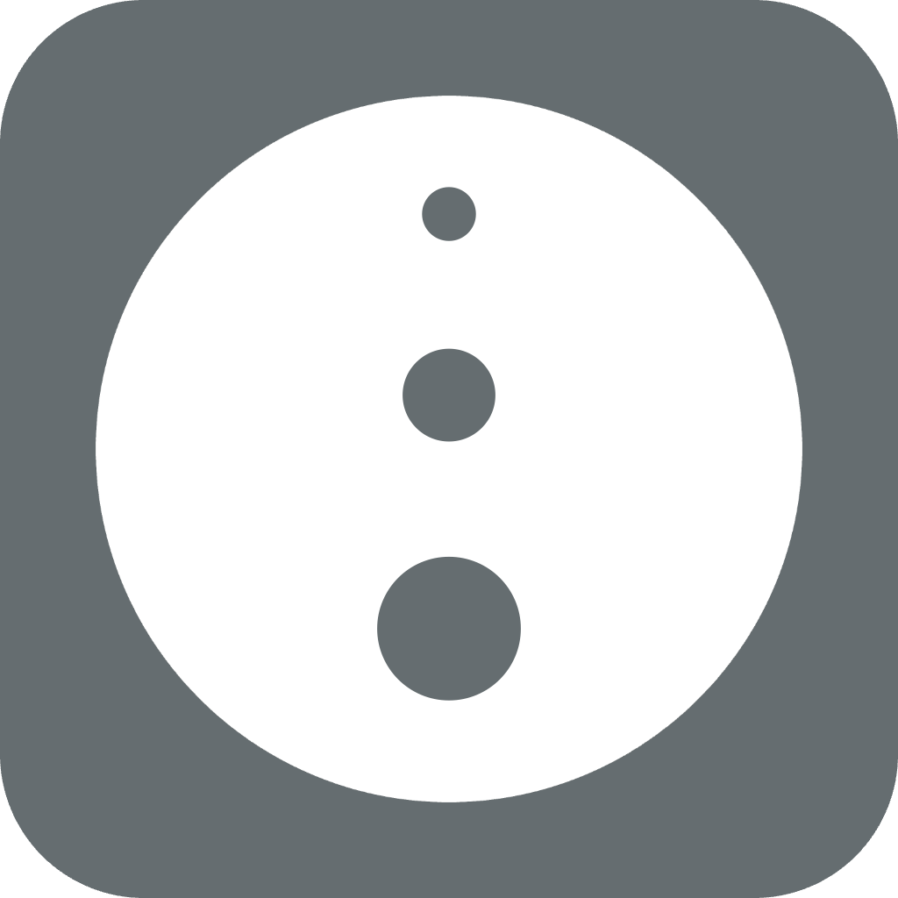
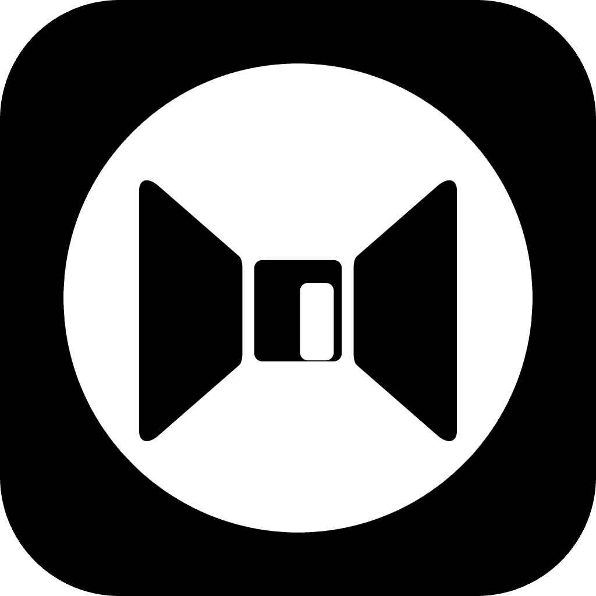

Un aperçu serein du kit de brossage mental MINDBEBOP.
Le brossage mental est l'habitude de libérer doucement les pensées qui n'ont pas besoin de rester actives dans votre esprit.
Tout au long de la journée, les pensées laissent des résidus — soucis répétitifs, jugements inachevés, rappels que vous ne voulez pas oublier, et bruits de fond qui maintiennent l'esprit en alerte même quand rien n'est requis. Avec le temps, cette accumulation crée une friction mentale.
Le brossage mental ne consiste pas à corriger les pensées ou à contrôler quoi que ce soit. Il s'agit de donner à une pensée un endroit où se poser, une réponse si nécessaire, ou suffisamment de calme pour la laisser s'éteindre d'elle-même — pour qu'elle n'ait plus à être portée.
Certaines pensées ont besoin d'une réponse.
Certaines ont besoin d'être confiées pour être mises de côté.
Certaines ont besoin de silence pour perdre leur urgence d'elles-mêmes.
Certaines appartiennent au passé ou au futur et n'ont pas leur place ici et maintenant.
L'idée derrière MINDBEBOP est d'accueillir les pensées au moment précis où elles apparaissent — dès qu'elles commencent à créer une friction mentale — plutôt que plus tard sous forme de bilan ou de réflexion.
C'est pourquoi les outils sont conçus pour être ultra-légers et utilisés sur le vif, chaque fois qu'une pensée commence à accaparer l'attention.
Lorsqu'une pensée revient sans cesse, c'est généralement pour l'une de ces deux raisons.
Soit elle a besoin d'une réponse — soit elle a besoin d'être portée pour que vous n'ayez pas à la retenir maintenant.
MINDBEBOP soutient les deux.
Quand une pensée a besoin d'une réponse.
Certaines pensées tournent en boucle parce que l'esprit n'a pas reçu de réponse. Elles ne demandent pas à être mémorisées ou gérées — elles demandent à être traitées.
Répondre une fois permet au cerveau d'enregistrer : « Ceci a été réglé. » Après cela, la pensée perd souvent son caractère d'urgence.
Quand une pensée semble importante, mais trop lourde à porter.
Certaines pensées n'ont pas besoin de réponse. Elles restent actives parce que vous avez peur de les perdre — une idée, un rappel, ou quelque chose de significatif.
Le Mode Transport permet au système de retenir la pensée pour vous, afin que votre esprit puisse lâcher prise sans crainte de l'oublier.
Ces deux modes sont présents dans tout le système — chaque application soutient l'un ou l'autre (ou les deux) à sa manière.
Vous n'avez pas besoin de choisir un mode — vous remarquez simplement ce que la pensée demande.

Soutien principal pour le Mode Réponse.
MindFlipOut aide lorsqu'une pensée a besoin d'une réponse. L'écrire et y répondre une fois donne à la pensée un point de chute, pour qu'elle cesse de tourner en rond.
Soutien principal pour le Mode Transport.
MindShoutOut aide lorsqu'une pensée compte mais que la retenir crée de la friction. La programmer permet au système d'en porter le poids — sans perdre la pensée.
Un espace serein où les pensées peuvent s'apaiser.
MindZoneOut réduit les signaux et les stimulations, donnant aux pensées de l'espace pour s'adoucir ou atteindre leur propre point final.
MindZoneOut ne décide pas de la signification d'une pensée — il lui offre simplement de l'espace.

Quand une pensée appartient à un autre temps.
Certaines pensées concernent le passé. D'autres concernent l'avenir. Lorsqu'une pensée n'appartient pas au présent, la situer dans le temps peut suffire à la laisser s'évacuer.

Quand ce n'est pas une pensée — c'est le rôle.
Une part de la friction mentale ne provient pas d'une pensée spécifique. Elle vient du fait de rester enfermé dans un rôle trop longtemps — le travailleur, le soignant, celui qui résout les problèmes, une version de soi qui ne s'efface jamais complètement.
MindBackOut offre un moyen serein de sortir du rôle lui-même, ne serait-ce que brièvement. Il ne vous demande pas de répondre, de porter, de corriger ou de suivre quoi que ce soit.
En créant de la distance avec le rôle, moins de pensées ont finalement besoin du Mode Réponse ou du Mode Transport.
Les outils MINDBEBOP sont conçus pour disparaître une fois leur tâche accomplie. Le but n'est pas de maintenir les pensées actives — c'est de les aider à trouver leur fin.